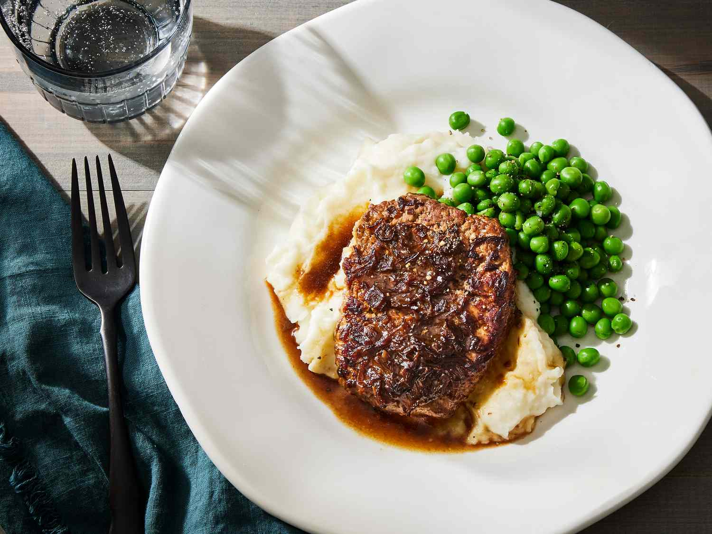

Home page
Easy Minute Steak

Description
This minute steak recipe is so easy. I serve it with mashed potatoes and warm rolls.
Ingredients
- 4 (½ pound) cube steaks (pounded rounded meat)
- 1 (10.5 ounce) can condensed French onion soup
Steps
- Gather all ingredients. Preheat the oven to 350 degrees F (175 degrees C).
- Sear steaks ina large skillet over medium heat, 2 to 4 minutes per side.
- Transfer steaks to a 9x13-inch baking dish. Pour condensed soup over top.
- Bake in the preheated oven until tender and slightly pink in the center, about 1 hour. An instant-read thermometer
inserted into the center should read 140 degrees F (60 degrees C) for medium doneness.